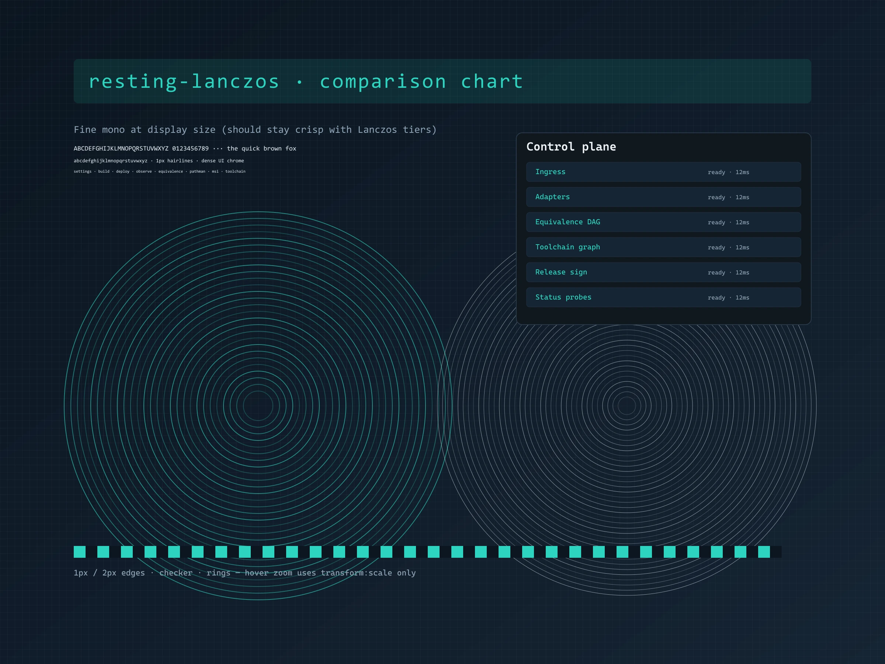
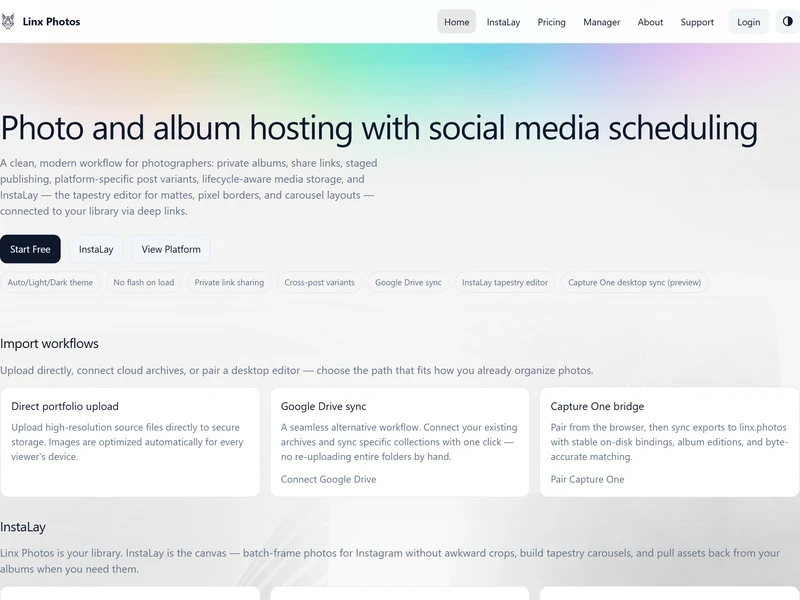

resting-lanczos
Comparison: browser downscale of a 2400w master vs
Lanczos tiers via srcset/sizes +
transform: scale(1.03). No WebGL mipmaps.
Integrated page:
devcentr.org/resting-lanczos.
01 · Naive browser downscale
02 · Lanczos srcset + transform

Hover the right card. Layout size stays fixed; only a CSS transform runs.
Generate tiers with
python scripts/generate-tiers.py --input master.png --id demo --out-dir demo/sample-tiers.